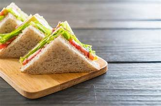

Kitchen Tips
- 🔪Cooking Tips
- 🧼Cleaning Tips
- 🧊Storage Tips
Recipe: Veg Sandwich

Ingredients
- 6 slices of bread (white, whole wheat, or multigrain)
- 1 small cucumber, thinly sliced
- 1 small tomato, thinly sliced
- 1 small onion, thinly sliced (optional)
- 1 small boiled potato, thinly sliced (optional)
- Butter or margarine, as needed
- Green chutney or mayonnaise, as needed
- Salt and black pepper, to taste
- Chaat masala (optional, for extra flavor)
Instructions
- Trim the edges of the bread slices (optional).
- Spread butter evenly on one side of each slice.
- Spread green chutney or mayonnaise over the buttered side.
- Layer cucumber, tomato, onion, and potato slices on three bread slices.
- Sprinkle with salt, pepper, and chaat masala if using.
- Top with the remaining bread slices to form sandwiches.
- Cut diagonally or into halves and serve fresh, or toast/grill if desired.